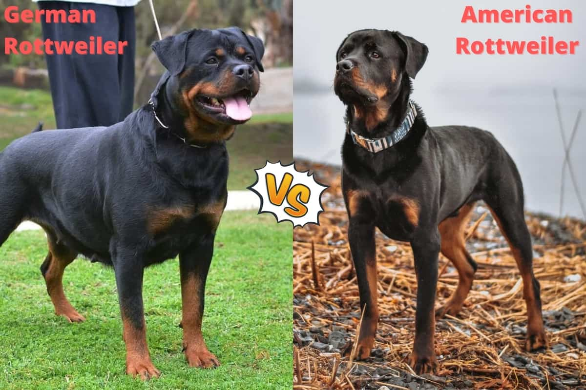

With their enormous size and muscular physique, Rottweilers are one of
the top ten breeds in the US. Owners across the country declare that
they love this breed for its intelligence, energetic temperament, and
ease of training. They have shown fierce loyalty towards family members,
as well as a protective nature towards strangers. Often used as therapy
dogs and guides, this breed makes great companions.
Breed History:
The Rottweiler is thought to descend from the
Mastiff, whose origins date back to Roman times. This breed obtained its
name from the German town of Rottweil, where they worked as cattle and
police support. Because of their strength, labor duties (like herding
livestock and pulling carts, carrying meat, etc.) were part of their
training.
Physical Appearance:
Weight and height average between the 80 to 120 pounds, and 22 to 27
inches. Have particularly big heads with tightly positioned and slightly
floppy ears. Muscle structure square. Lips somewhat loose that make them
a bit drooly. Medium-length coat, shiny and black with brown markings on
the legs, chest and face.
Personality:
They can be very independent and active dogs. The lack of constant
guidance can lead to them becoming diggers, nuisance barkers, or
engaging in other undesirable behaviors. Originally bred for work,
Rottweilers thrive on a job, no matter how small, even just to accompany
kids. This breed gets along well with people and other dogs when they
are well socialized, though males of the breed can be quite dominant and
aggressive. It is essential for the owner of these dogs to provide
consistent training and adequate socialization in order to keep them
from inflicting severe damage.
Life expectancy:
A pure breed Rottweiler is about 9 to 10 years average.
Taking care of Rottweilers:
Due to their large size,
Rottweilers are fairly easy to keep. In order to be a reliable family
companion, they require continuous and extensive socialization. A
Rottweiler should be carefully supervised when around a group of
children because they are often very protective of them. Their owners
are their favorite companions, and they do not do well being left alone
for long periods of time. Large males with loose lips, especially those
with large teeth, tend to drool frequently.